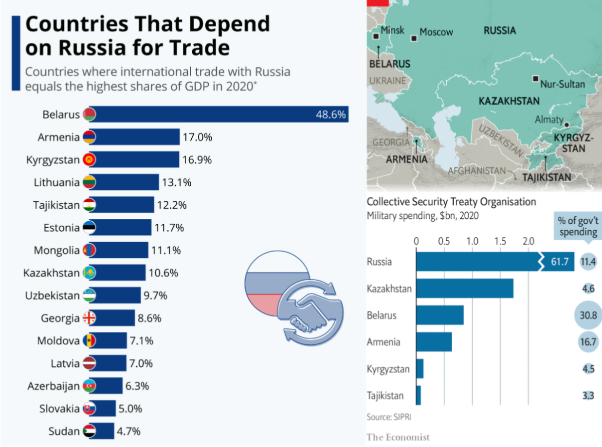

Ukraine, Russia, and how it Relates to Raid and Trade
Ben Renegar, Public Economics, 2024, First Website


Russia initially invaded Ukraine in 2014 to secure the port of Sevastapol. The combination of a lack of meaningful international condemnation and the overall hostility that the Ukrainian government had towards Russia only encouraged the Russian government to launch a full scale invasion in 2022.
This was likely due to the desire to replace the current Ukrainian government with a friendly one, which would allow Russia to regain the influence it lost in the country back in 2014. Hence the header.


Military alliances, like the CSTO, are an example of Hard Power. Not only do military alliances put greater emphasis on its stronger members, but they are also often economically linked with each other. While the CSTO has weakened over the years, the member states are still very dependent on Russia economically and militarily[3][4].
Russia has a sizeable amount of soft power, particularly through its influence of other countries' politics. As for Ukraine, one big example of the usage of soft power is the promotion of the Russian Orthodox Church, which is under the Patriarch of Moscow, Kirill, who is a close ally of Putin[5].

Supply of natural gas and various other resources by Russia to the European Union, as well as European supply of goods to Russia, which will not be focused on here, created a large amount of economic interdependence between Russia and the EU.

With a weakened Ukraine, Russia hoped to rexert its influence over the region and prevent Ukraine's entry into NATO, which would be a massive strategic loss for Russia.


Heya! I'm Ben! I've only been using programming and markup languages for a little bit, but I'm working to improve at it every day. This project was actually pretty fun to do. It was my first real experience with HTML and CSS, but it really helped me get a better understanding of how these things, along with Javascript, work together.
I primarily focus on Java, but it's pretty cool to test other things out as well. And hey, even though this website really basic, it's still something that I can put on my resume as a project that I've worked on. Every little bit helps!
I decided to go with this topic for a multitude of reasons, one of the biggest of these being that I have been keeping up with the Russo-Ukrainian War since it began. I have already done presentations about this war, but I have never done one about the potential economic reasons for why Russia may have chosen to invade. This idea partially came from one of the questions that was in the midterm exam, and it was a question that I wanted to go into much more detail about than I was able to. I love time constraints.
I also wanted to use this as an opportunity to try using Html, CSS, and Javascript more, since these are languages that I want to get more experience with. This obviously will not look as good as a powerpoint, but that is not really the point. This is a good learning experience for me, and it gives me a project where I can actually test out these skills.
I've been rambling on for long enough, so I'll just link this little video that helps explain the development process of this. Just click the image below. Have a good one ^^